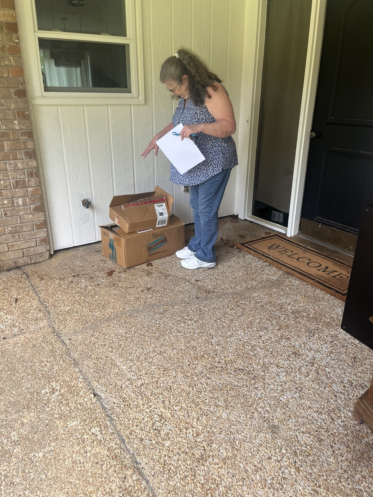
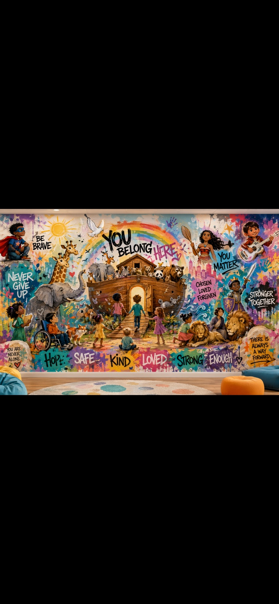

What happens after the headlines?
We stay. We collect. We sort. We deliver. We build systems of help where people can actually reach them.
"Your word is a lamp for my feet, a light on my path."Psalm 119:105
The room had no life in it.
The Porchlight story begins with the unglamorous part: supplies shoved into a room, no rhythm yet, no real system yet, just possibility waiting to be organized.
That beginning matters because people need to see what was built from nothing.
Then the first donations came in.
Porch pickups. Cars loaded down. Boxes at doors. People giving what they had. This is the grassroots engine behind the work.




Life entered the space.
Porchlight is the outreach arm of Mississippi Life Alliance: a beacon for people searching for support, safety, supplies, and someone willing to help them take the next step.
Clothing, hygiene products, household items, baby supplies, and emergency needs.
Backpacks for foster youth, outreach kits, NICU baskets, and dignity-centered essentials.
Schools, donors, churches, hotels, restaurants, volunteers, and community sponsors.